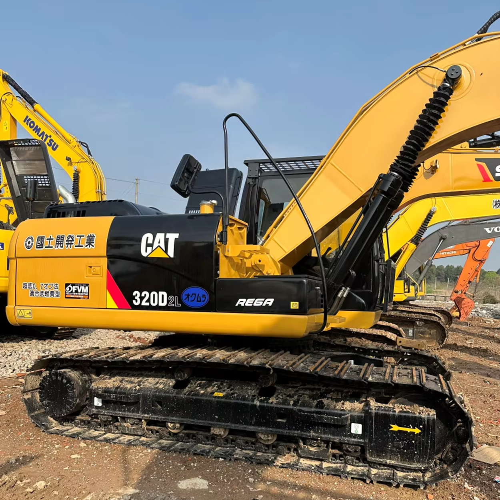

Refurbished Caterpillar Cat 320 Excavator
The Caterpillar Cat 320 Excavator is one of the most popular and well-regarded models in the heavy equipment industry, known for its versatility, power, and reliability. Whether you’re working in construction, landscaping, mining, or any other industry that requires heavy-duty digging, lifting, and material handling, the Cat 320 excels at getting the job done.
Honestly, it's almost impossible to buy a brand new excavator from China. They either don't exist or are made in China. If a Chinese seller tells you their Caterpillar/Komatsu/Volvo/Kobelco/Hitachi is brand new, they're lying. Therefore, a refurbished excavator is your best bet.

Here are the detailed specifications for a refurbished Caterpillar Cat 320 excavator:
Operating Weight and Dimensions
- Operating Weight: 21,000–22,000 kg
- Transport Length: ~9.4–9.6 meters
- Transport Width: ~2.9–3.2 meters
- Transport Height: ~3.0–3.2 meters
- Tail Swing Radius: ~3.0–3.2 meters
- Track Width: 600 mm standard
- Counterweight: ~4.8 metric tons
Engine and Powertrain
- Engine Model: Cat C4.4 or C7.1 (Tier 3 or Tier 4 Final depending on build year)
- Rated Power Output: ~121–129 kW (162–173 hp) @ 2,000 rpm
- Fuel Tank Capacity: ~400–420 liters
- Travel Speed: 3.5–5.0 km/h
- Swing Speed: ~11 rpm
- Altitude Capability: Up to 3,000 m without derate
Hydraulic System
- Main Pump Type: Load-sensing, variable displacement piston pumps
- Flow Rate: ~2 × 270–300 L/min
- System Pressure: Up to 35 MPa
- Hydraulic Oil Capacity: ~300–350 liters
- Smart Modes:
- Auto Dig Boost
- Heavy Lift Mode
- Auto Hydraulic Warm-Up
Performance Metrics
- Bucket Capacity: 0.9–1.2 m³ (SAE heaped)
- Max Digging Depth: ~6.6–6.8 meters
- Max Reach (Horizontal): ~10.0–10.5 meters
- Max Dump Height: ~6.5–6.7 meters
- Bucket Digging Force: ~150–160 kN
- Arm Digging Force: ~110–120 kN
Cab and Operator Features
- Cab Type: ROPS/FOPS certified
- Display: LCD monitor or touchscreen (varies by build year)
- Controls: Pilot-operated or electro-hydraulic joysticks
- Comfort: Adjustable air-suspension seat, HVAC, low-noise cab
- Visibility: Panoramic glass, optional rear-view camera, LED lighting
Smart Features and Efficiency
- Technology Suite (varies by build year):
- Cat Grade with 2D
- Grade Assist
- Payload Measurement
- Work Tool Recognition
- Operating Modes: Power, Smart, ECO
- Emissions Control:
- Tier 3: mechanical injection, no aftertreatment
- Tier 4 Final: DOC + DPF + SCR
- Ambient Capability:
- High temp: up to 52°C
- Cold start: down to –18°C
Attachments Compatibility
- Standard Bucket: 0.9–1.2 m³
- Optional Tools: Hydraulic breaker, demolition shear, ripper, compactor
- Quick Coupler: Hydraulic (Cat Pin Grabber or Smart Coupler)
Refurbishment Scope
Refurbished Cat 320 units typically include:
- Engine Overhaul: Turbocharger, injectors, cooling system, emissions service
- Hydraulic Restoration: Pump recalibration, valve block testing, hose replacement
- Electrical Diagnostics: Monitor, sensors, wiring harness, telematics
- Cab Reconditioning: Seat, joysticks, HVAC, repainting
- Structural Repairs: Boom/bucket welding, bushing replacement, undercarriage rebuild
Overview of the Caterpillar Cat 320 Excavator
The Caterpillar Cat 320 is a mid-sized, hydraulic crawler excavator designed to handle a wide variety of construction and mining tasks. Its reputation for durability, versatility, and fuel efficiency has made it a staple in job sites around the world. This model is particularly useful for digging, trenching, grading, and lifting, and its smooth operation and ease of use make it a favorite among operators.
Caterpillar is known for manufacturing high-quality machinery, and the Cat 320 is no exception. With advanced features like a high-performance hydraulic system, enhanced operator comfort, and fuel-saving technologies, it’s a great choice for businesses looking for both performance and value.
Key Specifications of the Caterpillar Cat 320 Excavator
-
Operating Weight: Approximately 20,500 - 22,000 kg (45,000 - 48,500 lbs)
-
Engine Power: 120 - 130 hp (89 - 97 kW)
-
Max Digging Depth: Up to 6.2 meters (20.3 feet)
-
Maximum Reach: Around 9 meters (29.5 feet)
-
Bucket Capacity: Typically 0.8 - 1.2 cubic meters (28 - 42 cubic feet)
-
Fuel Tank Capacity: About 350 liters (92 gallons)
-
Travel Speed: Up to 5.3 km/h (3.3 mph)
These specifications highlight the Cat 320’s capability to handle a variety of tasks across different job sites while maintaining strong performance.
Performance and Efficiency of the Cat 320
The Caterpillar Cat 320 is built for high performance and optimal fuel efficiency. With its advanced hydraulics, powerful engine, and ergonomic controls, the Cat 320 provides reliable operation in both urban and rural environments. Whether working in tight spaces or on large-scale projects, it offers both power and precision.
Performance Highlights:
-
Hydraulic Efficiency: The Cat 320 features a powerful hydraulic system that offers smooth, fast cycle times. This allows operators to efficiently complete tasks such as digging, lifting, and grading, making it a highly productive machine on any job site.
-
Fuel Efficiency: Caterpillar’s advanced fuel-saving technology, including optimized engine performance and hydraulics, helps reduce fuel consumption without compromising performance. This makes the Cat 320 a cost-effective choice for long-term operations.
-
Engine Power and Versatility: The Cat 320 is equipped with an engine that delivers solid power while minimizing fuel consumption. This enables the machine to handle demanding tasks such as digging through tough soil, lifting heavy materials, and grading large areas with ease.
-
Operator-Friendly Features: The Cat 320 comes with a range of operator-friendly features such as precise joystick controls, a smooth hydraulic system, and easy-to-read instrumentation. These features not only improve efficiency but also reduce operator fatigue during long work hours.
Durability and Longevity
Caterpillar is known for producing durable machines that can withstand tough working conditions, and the Cat 320 is no exception. Designed with high-quality components and built to endure heavy use, this excavator is capable of handling a wide range of tasks across various environments.
Durability Features:
-
Strong Undercarriage: The Cat 320 is built with a heavy-duty undercarriage designed to resist wear and tear. It provides stability and durability, making the machine ideal for working in rugged and uneven terrains.
-
Reinforced Structure: From the arm to the boom, the Cat 320 is built with reinforced structures to handle the stresses of demanding operations, reducing the risk of breakdowns and ensuring long-lasting performance.
-
Reliable Engine: Caterpillar engines are known for their reliability and longevity, and the engine in the Cat 320 is designed to offer years of service with proper maintenance.
Comfort and Safety
The Cat 320 is designed with the operator’s comfort and safety in mind. The spacious cabin is equipped with adjustable seating, high-visibility windows, and easy-to-use controls, making it easier for operators to work for extended periods without fatigue. The excavator also features multiple safety features to protect the operator and other workers on the site.
Comfort and Safety Features:
-
Ergonomic Cabin: The Cat 320 has an ergonomic cabin with a comfortable seat, an intuitive control panel, and a well-designed layout that minimizes operator fatigue during long shifts.
-
High Visibility: The excavator is equipped with large windows and mirrors to provide excellent visibility around the worksite, reducing the risk of accidents and enhancing safety.
-
Safety Features: The Cat 320 includes safety features such as a roll-over protective structure (ROPS), a falling object protective structure (FOPS), and an optional rearview camera. These features help ensure a safe working environment, minimizing the risk of injury.
Versatility and Attachments
One of the standout features of the Cat 320 is its versatility. It can be outfitted with a variety of attachments to handle different tasks, making it suitable for a wide range of industries.
Common Attachments for the Cat 320:
-
Buckets: Whether you need a general-purpose bucket for digging, a heavy-duty bucket for tough materials, or a grading bucket, the Cat 320 can handle them all.
-
Hydraulic Breakers: The Cat 320 can be equipped with a hydraulic breaker, making it ideal for demolition work and breaking rock or concrete.
-
Augers: Auger attachments allow the Cat 320 to drill holes in various soil types, making it perfect for fencing and utility pole installation.
-
Grapples: The grapple attachment is useful for handling scrap materials, logs, or debris, allowing the Cat 320 to perform material handling tasks efficiently.
-
Quick Coupler: The Cat 320 can be fitted with a quick coupler, allowing the operator to switch between attachments quickly and easily without leaving the seat.
Benefits of Purchasing a Refurbished Caterpillar Cat 320 Excavator
A refurbished Cat 320 offers several advantages, particularly for businesses looking to maximize their investment while still getting a reliable and high-performing machine.
Key Benefits:
-
Cost Savings: Refurbished models are significantly more affordable than brand-new machines, offering businesses an opportunity to acquire a high-performance excavator at a reduced cost.
-
Thorough Reconditioning: A refurbished Cat 320 undergoes a rigorous reconditioning process, where worn-out parts are replaced, and the machine is fully tested to meet Caterpillar’s high standards. This ensures that the machine operates like new.
-
Warranty: Many refurbished Cat 320 excavators come with warranties, offering protection against unexpected issues and giving buyers peace of mind.
-
Environmental Impact: Purchasing a refurbished machine helps extend its lifespan, contributing to sustainability by reducing the need for new manufacturing.
Maintenance Tips for the Caterpillar Cat 320 Excavator
Proper maintenance is key to ensuring that the Cat 320 continues to operate at its best. Regular maintenance not only extends the machine's lifespan but also ensures that it remains safe and efficient.
Maintenance Recommendations:
-
Engine Care: Change the oil and air filters regularly, and check the coolant system to ensure the engine runs efficiently. Inspect the radiator for any signs of blockages.
-
Hydraulic System: Keep the hydraulic fluid levels topped up and regularly inspect hoses for any wear or leaks. Clean the hydraulic filters and check the hydraulic cylinders for damage.
-
Undercarriage: Inspect the tracks and undercarriage for wear and tear. Lubricate the components regularly and replace worn-out parts promptly to ensure smooth operation.
-
Attachments: Check the attachments, such as the bucket, arm, and boom, for any signs of wear or cracks. Replace damaged parts as needed.
Conclusion
The Caterpillar Cat 320 Excavator is an excellent choice for a variety of excavation and material handling tasks. With its powerful engine, efficient hydraulics, comfortable cabin, and advanced safety features, it delivers outstanding performance in a wide range of environments. By choosing a refurbished Cat 320, businesses can benefit from all of these features at a significantly lower price, making it an economical and smart investment for those looking to enhance their operations without compromising on quality or reliability.
Our Commitment
- 2 years / 4000 hours warranty.
- EPA certified.
- No sweatshop labor.
Contacts

- [email protected]
- Youtube Instagram Facebook
- Navigation: G206 (Sishu Bridge) in Changfeng County, Hefei City, Anhui Province, 200 meters north to the east